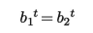
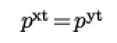
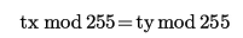
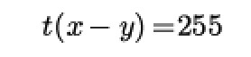
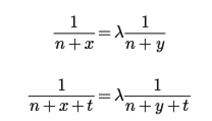

Cauchy or Vandermonde?Encode MatrixEncode Matrix的形式如下（如果满足systematic codes）：
一般生成方法
懒惰生成方法
看似懒惰的方法没有什么大问题并且省去了消元的步骤，但真的是这样吗？ 本文的主要内容就是证明懒惰方法下矩阵的性质问题。通常，我们会选用 Vandermonde matrix 或者 Cauchy matrix 来做为拼接部分，因此接下来就对这两种矩阵的性质进行探讨。 当删除任意 m 行会发生什么？删除任意 m 行后，我们会得到一个 n × n 的方阵，在这个方阵中有若干单位矩阵的行和若干生成矩阵（gen matrix) 的行 接下来我们来考察该方阵的秩。 首先可以肯定的是，单位矩阵的部分的秩等于其行数，并且 1 所在的列可以构成生成矩阵中任意行相应的列元素。 我们假定在该方阵中包含 a 行生成矩阵，若矩阵的秩小于 n （存在线性相关），则小于等于 a-1 行（来自 gen matrix）中的元素可以分别构成另外 1 行来自（ gen matrix）中的 a 个元素 那么证明工作转化为：小于等于 a-1 行（来自 gen matrix）中的元素是否可以分别构成另外 1 行来自（ gen matrix）中的 a 个元素。 Vandermonde对于 Vandermonde matrix 来说，每一行的首项为 1 , 因此问题变成小于等于 a-1 行（来自 gen matrix）中的元素可以分别构成另外 1 行来自（ gen matrix）中的 a-1 个非行首项元素。 很显然的是，上面的要求对于任意由非零元素构成的矩阵都是成立的。只不过 vandermonde matrix 有其生成规律，任意行首项为 1 则规定了这种构成关系必须为直接相等，问题转化为： 有限域元素均为本原多项式的幂，设本原多项式为 p ,则： 由上式得： 即： 令 λ = 1 ： 只要找到满足以上关系的参数就可以找到不可逆的情况了，所以用偷懒的方法使用 vandermonde matrix 是可能碰到问题的。 Cauchy跟上面的过程类似，只不过柯西矩阵中任意行或任意列的元素均不相等，因此我们需要求： 小于等于 a-1 行（来自 gen matrix）中的元素可以构成另外 1 行来自（ gen matrix）中的 a 个元素。 这要求在 cauchy matrix 中某两行中某两列呈现如下关系（即某一行在乘法运算中得到另外一行两个元素）： 化简得: 这显然是矛盾的。 结论Cauchy Matrix ，省时省力 Cauchy Matrix ，放心安全 |